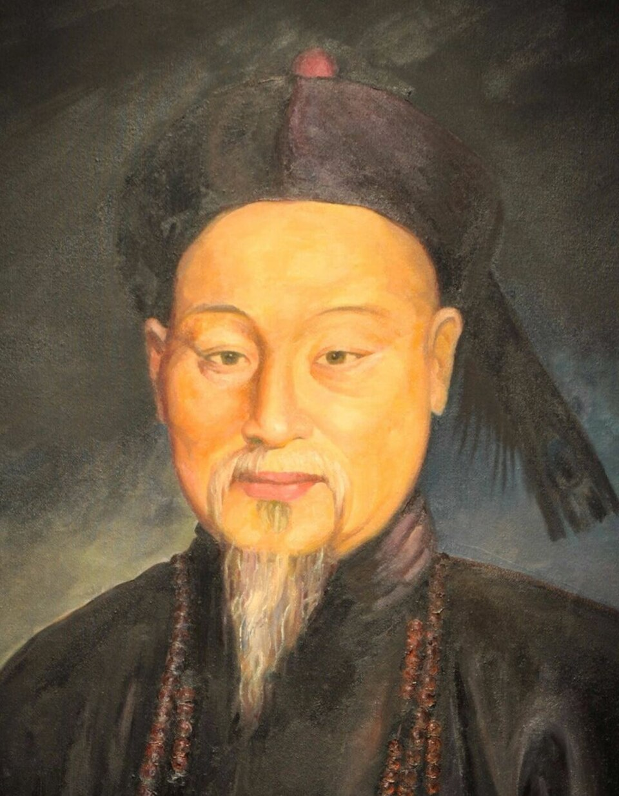
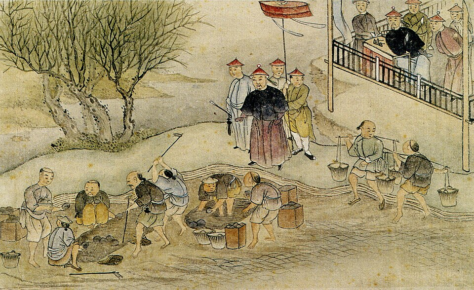
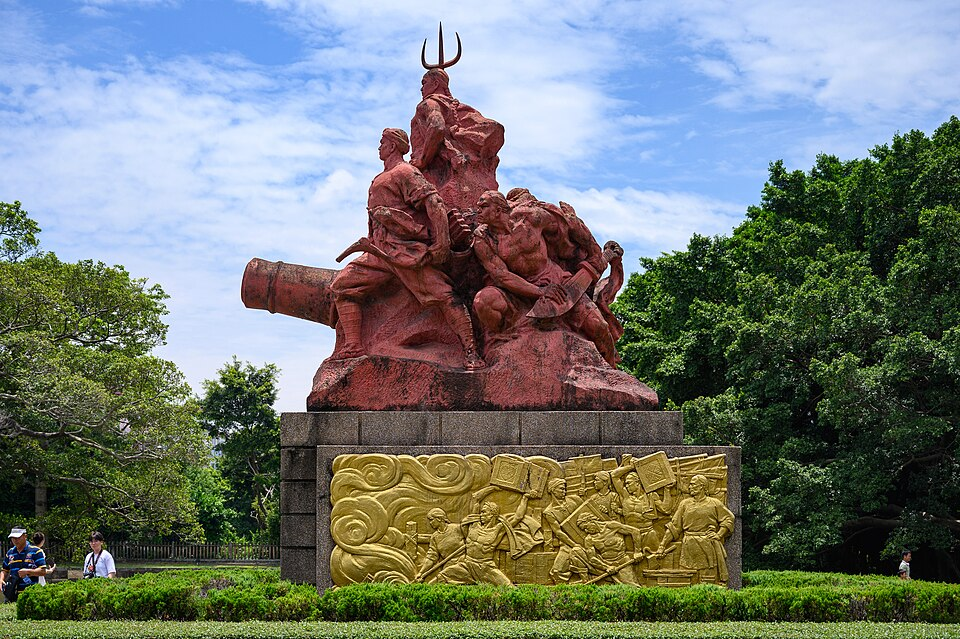

⏱️ 10초 카드 · 아편전쟁 전야의 청 (1785~1850)
아편 폐기빅토리아 여왕에게 보낸 편지희생양
여는 질문 — 옳은 일을 했는데도 결과가 나쁘면, 그 선택은 틀린 걸까?
이름
한국어임칙서
원어林則徐
실제 발음린 쩌쉬
로마자Lín Zéxú
영어권Lin Zexu
왜 이 사람인가
이 도감에서 임칙서는 '옳음과 결과가 늘 같지는 않다'는 어려운 진실을 보여 줘요. 그는 아편이라는 명백한 악을 없애려 한 청렴하고 강직한 관리였지만, 그 결단은 아편전쟁을 불렀고 — 정작 그 자신은 패전의 책임을 뒤집어쓰고 유배됐죠. 한 사람의 올바른 의지로는 거대한 시대의 흐름을 막기 어렵다는 것, 그리고 그래도 옳은 일을 해야 하는가를 묻게 하는 인물이에요.
생애
청나라의 관리였어요. 영국 상인들이 들여온 아편이 백성을 병들게 하자, 1839년 황제의 특명을 받아 광저우로 내려갔어요.
그는 영국 상인이 가진 아편 약 2만 상자를 거둬들여 바닷가에서 모두 폐기했어요. 영국 빅토리아 여왕에게 '당신 나라에서 금지한 것을 왜 남의 나라 백성에게 파느냐'는 취지의 편지까지 썼지요(다만 그 편지는 여왕에게 전해지지 못했어요).
그의 결단은 옳았지만 전쟁을 막진 못했어요. 아편전쟁에서 청나라가 지자, 그는 도리어 패전의 책임을 뒤집어쓰고 멀리 신장 땅으로 유배되는 희생양이 되고 말았어요(훗날 복권됩니다).
자료로 보기 — 유묵·사진



남긴 말
“당신 나라에서 금지한 아편을, 어찌하여 남의 나라 백성에게는 팔아 해치려 하십니까?”
영국 빅토리아 여왕에게 보낸 편지에서 — 다만 그 편지는 끝내 여왕에게 전해지지 못했어요. · 출처: 임칙서가 빅토리아 여왕에게 보낸 공개서한 1839 (요지)
“아편이 한 상자라도 남아 있는 한, 나는 결코 물러서지 않겠습니다.”
황제에게 아편을 뿌리 뽑겠다는 결의를 아뢰며 — 그의 강직함을 보여 줘요. · 출처: 임칙서의 상주문(요지)
연표
- 1785출생
- 1839흠차대신으로 광저우 파견 · 아편 몰수·폐기
- 1840아편전쟁 발발
- 1841패전 책임으로 신장 유배
- 1850사망
생애의 길 — 푸저우에서 신장까지 🗺️
고향의 학자에서 황제의 특명관으로, 아편 폐기에서 머나먼 유배지로. 번호를 차례로 눌러 보세요.
현재 지도 위 경로예요. 남쪽 바닷가에서 아편을 불태운 강직한 관리가, 그 옳은 일 때문에 서북쪽 사막 끝으로 유배됐어요 — '옳음'과 '결과'가 어긋난 한 사람의 길이죠.
빛과 그림자청렴하고 강직했지만, 한 사람의 의지로 거대한 시대의 흐름(서구 열강의 압박)을 막기엔 역부족이었어요. 옳음과 결과가 늘 같지는 않다는 걸 보여줘요.
더 깊이 (고등·일반)
강직한 관리, 황제의 특명을 받다
임칙서는 청렴하고 일 잘하기로 이름난 관리였어요. 영국 상인들이 들여온 아편이 청나라 백성을 병들게 하고 나라의 은을 빨아내자, 1839년 황제는 그에게 '흠차대신'이라는 특별한 권한을 주어 아편 문제의 본거지인 광저우로 내려보냈죠.
참고: 임칙서·흠차대신 임명 일반
2만 상자의 아편을 바다에 — 후먼의 폐기
광저우에 도착한 임칙서는 영국 상인들이 가진 아편 약 2만 상자(엄청난 양이에요)를 거둬들였어요. 그리고 바닷가 후먼에서 소금과 석회를 섞어 모두 폐기했죠. 백성을 해치는 독을 단호하게 없앤, 깨끗하고 용감한 결단이었어요.
참고: 후먼 아편 폐기(1839) 일반
여왕에게 보낸 편지 — 닿지 못한 항의
임칙서는 영국 빅토리아 여왕에게 직접 편지를 썼어요. '당신 나라에서도 금지한 아편을 왜 남의 나라 백성에게 파느냐'는 따끔한 항의였죠. 도덕적으로 빈틈없는 논리였지만 — 그 편지는 끝내 여왕에게 전해지지 못했고, 영국은 '자유무역'을 내세워 오히려 전쟁을 준비했어요.
참고: 임칙서의 대(對)빅토리아 서한 일반
아편전쟁 — 옳음이 막지 못한 전쟁
1840년, 영국은 아편 폐기로 입은 손해와 무역 확대를 명분으로 함대를 보냈어요(아편전쟁). 근대식 군함과 대포 앞에서 청나라는 속수무책으로 무너졌죠. 임칙서의 결단은 옳았지만, '옳다고 해서 이길 수 있는 건 아니다'라는 냉혹한 현실이 그 뒤를 따랐어요.
참고: 아편전쟁(1840~42) 일반
희생양이 된 강직함
전쟁에서 지자 청 조정은 책임을 물을 사람이 필요했어요. 그래서 가장 강직하게 아편에 맞섰던 임칙서가 도리어 패전의 책임을 뒤집어쓰고 멀리 신장 땅으로 유배됐죠. 옳은 일을 한 사람이 벌을 받는 모순 — 다행히 훗날 그는 복권됐고, 지금 중국에서는 '민족의 영웅'으로 기려져요.
참고: 임칙서 유배·복권 일반
사람의 그물 — 함께 읽을 인물
이 인물이 나오는 이야기
더 공부하기 — 여기서 출발하세요
📜 1차 사료
- 임칙서가 빅토리아 여왕에게 보낸 편지 (1839) ↗'당신 나라에서 금한 것을 왜 우리에게 파느냐'는 항의.
🎬 영상으로
- Extra History 〈The Righteous Minister〉 (아편전쟁) ↗🟢 아편전쟁에서 임칙서의 역할을 다룬 애니메이션 교육 영상(영어/자막).
📍 가 볼 곳
- 아편전쟁박물관·후먼 (광둥) ↗임칙서가 아편을 폐기한 바닷가에 세워진 박물관.
- 임칙서 기념관 (푸저우)그의 고향에 세워진 기념관.